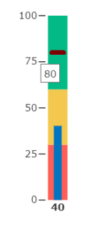
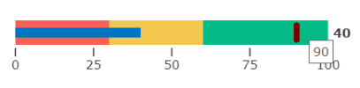
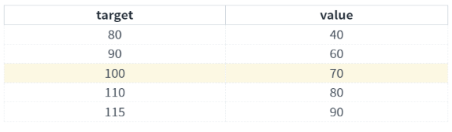
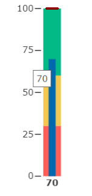
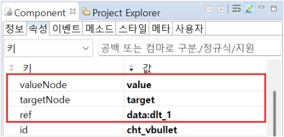

FusionChart의 종류 중 하나인 FwBulletChart의 기본 사용 예제입니다. 목표 대비 실적 결과를 보여주기 위한 목적으로 사용하며, 막대 형태의 비율 표현이 가능합니다.
dataList와 BulletChart 연결하기
gridView에서 선택된 행 변경시, chart에 표현되는 데이터 변경
초기 표현할 행 설정하기
1
CASE 1. 속성 'chartType'이 vbullet일 때
예제 영역 'FwBulletChart - chartType = "vbullet" (기본 값)'에서 테스트합니다.'dataList structure 1'은 연결된 데이터리스트의 구조입니다.
세로 차트로 나타납니다.
첫 번째 행의 target과 value 데이터가 차트에 표현됩니다.Image 1.브라우저(Chrome) 실행 예시

2
CASE 2. 속성 'chartType'이 hbullet일 때
예제 영역 'FwBulletChart - chartType = "hbullet"'에서 테스트합니다.'dataList structure 2'은 연결된 데이터리스트의 구조입니다.
가로 차트로 나타납니다.
두 번째 행의 target과 value 데이터가 차트에 표현됩니다. ('setRowPosition' 메소드 사용)Image 2.브라우저(Chrome) 실행 예시

1
STEP 1: 다른 행을 선택합니다.
Image 3.브라우저(Chrome) 실행 예시

2
STEP 2: 하단의 chart를 확인합니다.
gridView에서 선택된 행의 값으로 chart에 표현되는 데이터가 변경됩니다. (dataList가 gridView와 연동된 경우, gridView에서 선택된 행이 변경되면 자동으로 chart에 표현되는 데이터도 변경됩니다.)
Image 4.브라우저(Chrome) 실행 예시

다음은 FwBulletChart 컴포넌트의 필수 적용 속성입니다.
[필수] ref="dataList ID" //차트와 연결할 데이터리스트
[필수] targetNode="column ID"
[필수] valueNode="column ID"
dataList를 연결하고, 'targetNode', 'valueNode' 속성을 지정합니다. 'targetNode' 속성은 차트에서 목표치를 표현하는 컬럼이고, 빨간 선으로 표시되는 부분입니다. 'valueNode' 속성은 차트에서 달성치를 표현하는 컬럼이고, 파란 막대 선으로 표시되는 부분입니다.
Image 5.웹스퀘어 스튜디오의 Component View - 속성 설정 예시

dataList의 'setRowPosition' 메소드를 사용하여 gridView에서 선택할 행을 설정합니다. 행 인덱스를 1로 설정하면 두 번째 행의 데이터가 chart에 표현됩니다.
세부 설정은 아래의 스크립트 예시에 작성되어 있습니다.
Example 1.Script
// id가 "dlt_2"인 dataList에 data 추가 var data = [{"target":"70","value":"30"},{"target":"90","value":"40"},{"target":"110","value":"50"}]; dlt_2.setJSON(data); // "dlt_2"와 연동된 컴포넌트(grd_2)에서 두 번째 행을 선택 ("target":"90","value":"40") dlt_2.setRowPosition(1);
chartType
targetNode
valueNode
setRowPosition